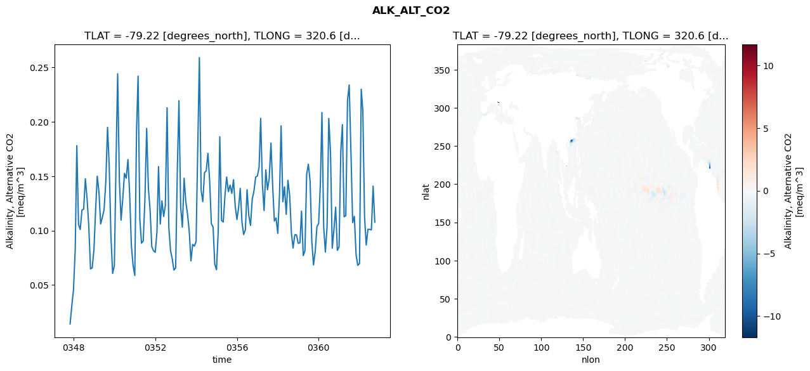
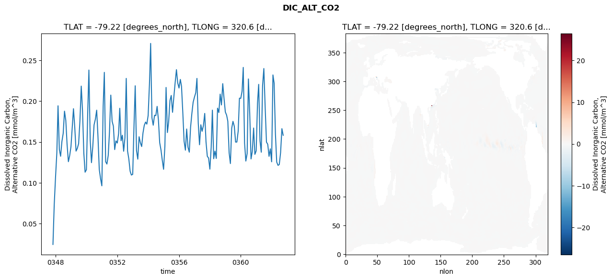
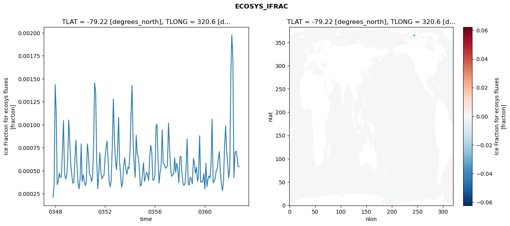
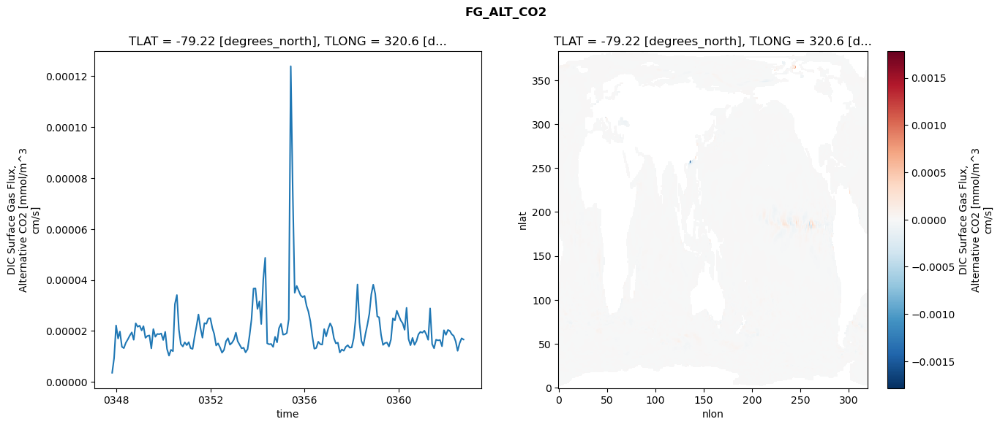

glb-dor_North_Atlantic_basin_045_1999-10-01_00183#
Simulation details#
Case: smyle.cdr-atlas-v0.glb-dor_North_Atlantic_basin_045_1999-10-01_00183.001
Basin: North_Atlantic_basin
Polygon: 45.0
Start date: 1999-10
Show code cell source Hide code cell source
import xarray as xr
import matplotlib.pyplot as plt
Show code cell source Hide code cell source
zarr_store = "/path/to/zarr/store"
# Parameters
zarr_store = "/global/cfs/projectdirs/m4746/Projects/Ocean-CDR-Atlas-v0/data/validation/smyle.cdr-atlas-v0.glb-dor_North_Atlantic_basin_045_1999-10-01_00183.001.validation.zarr"
Show code cell source Hide code cell source
%%time
ds_o = xr.open_zarr(zarr_store).compute()
ds_o
CPU times: user 660 ms, sys: 418 ms, total: 1.08 s
Wall time: 1.25 s
<xarray.Dataset> Size: 2MB
Dimensions: (nlat: 384, nlon: 320, time: 180)
Coordinates:
TLAT float64 8B -79.22
TLONG float64 8B 320.6
ULAT float64 8B -78.95
ULONG float64 8B 321.1
* time (time) object 1kB 0347-11-01 00:00:00 ... 0362-10-01 0...
z_t float32 4B 500.0
Dimensions without coordinates: nlat, nlon
Data variables:
ALK_ALT_CO2_diff (nlat, nlon) float32 492kB nan nan nan ... nan nan nan
ALK_ALT_CO2_rmse (time) float64 1kB 0.01427 0.03058 ... 0.1409 0.1077
DIC_ALT_CO2_diff (nlat, nlon) float32 492kB nan nan nan ... nan nan nan
DIC_ALT_CO2_rmse (time) float64 1kB 0.0245 0.07315 ... 0.1663 0.1582
ECOSYS_IFRAC_diff (nlat, nlon) float32 492kB nan nan nan ... nan nan nan
ECOSYS_IFRAC_rmse (time) float64 1kB 0.0002101 0.0003533 ... 0.0005404
FG_ALT_CO2_diff (nlat, nlon) float32 492kB nan nan nan ... nan nan nan
FG_ALT_CO2_rmse (time) float64 1kB 3.587e-06 9.358e-06 ... 1.663e-05xarray.Dataset
- nlat: 384
- nlon: 320
- time: 180
- TLAT()float64-79.22
- long_name :
- array of t-grid latitudes
- units :
- degrees_north
array(-79.22052261)
- TLONG()float64320.6
- long_name :
- array of t-grid longitudes
- units :
- degrees_east
array(320.56250892)
- ULAT()float64-78.95
- long_name :
- array of u-grid latitudes
- units :
- degrees_north
array(-78.95289509)
- ULONG()float64321.1
- long_name :
- array of u-grid longitudes
- units :
- degrees_east
array(321.12500894)
- time(time)object0347-11-01 00:00:00 ... 0362-10-...
- bounds :
- time_bound
- long_name :
- time
array([cftime.DatetimeNoLeap(347, 11, 1, 0, 0, 0, 0, has_year_zero=True), cftime.DatetimeNoLeap(347, 12, 1, 0, 0, 0, 0, has_year_zero=True), cftime.DatetimeNoLeap(348, 1, 1, 0, 0, 0, 0, has_year_zero=True), cftime.DatetimeNoLeap(348, 2, 1, 0, 0, 0, 0, has_year_zero=True), cftime.DatetimeNoLeap(348, 3, 1, 0, 0, 0, 0, has_year_zero=True), cftime.DatetimeNoLeap(348, 4, 1, 0, 0, 0, 0, has_year_zero=True), cftime.DatetimeNoLeap(348, 5, 1, 0, 0, 0, 0, has_year_zero=True), cftime.DatetimeNoLeap(348, 6, 1, 0, 0, 0, 0, has_year_zero=True), cftime.DatetimeNoLeap(348, 7, 1, 0, 0, 0, 0, has_year_zero=True), cftime.DatetimeNoLeap(348, 8, 1, 0, 0, 0, 0, has_year_zero=True), cftime.DatetimeNoLeap(348, 9, 1, 0, 0, 0, 0, has_year_zero=True), cftime.DatetimeNoLeap(348, 10, 1, 0, 0, 0, 0, has_year_zero=True), cftime.DatetimeNoLeap(348, 11, 1, 0, 0, 0, 0, has_year_zero=True), cftime.DatetimeNoLeap(348, 12, 1, 0, 0, 0, 0, has_year_zero=True), cftime.DatetimeNoLeap(349, 1, 1, 0, 0, 0, 0, has_year_zero=True), cftime.DatetimeNoLeap(349, 2, 1, 0, 0, 0, 0, has_year_zero=True), cftime.DatetimeNoLeap(349, 3, 1, 0, 0, 0, 0, has_year_zero=True), cftime.DatetimeNoLeap(349, 4, 1, 0, 0, 0, 0, has_year_zero=True), cftime.DatetimeNoLeap(349, 5, 1, 0, 0, 0, 0, has_year_zero=True), cftime.DatetimeNoLeap(349, 6, 1, 0, 0, 0, 0, has_year_zero=True), cftime.DatetimeNoLeap(349, 7, 1, 0, 0, 0, 0, has_year_zero=True), cftime.DatetimeNoLeap(349, 8, 1, 0, 0, 0, 0, has_year_zero=True), cftime.DatetimeNoLeap(349, 9, 1, 0, 0, 0, 0, has_year_zero=True), cftime.DatetimeNoLeap(349, 10, 1, 0, 0, 0, 0, has_year_zero=True), cftime.DatetimeNoLeap(349, 11, 1, 0, 0, 0, 0, has_year_zero=True), cftime.DatetimeNoLeap(349, 12, 1, 0, 0, 0, 0, has_year_zero=True), cftime.DatetimeNoLeap(350, 1, 1, 0, 0, 0, 0, has_year_zero=True), cftime.DatetimeNoLeap(350, 2, 1, 0, 0, 0, 0, has_year_zero=True), cftime.DatetimeNoLeap(350, 3, 1, 0, 0, 0, 0, has_year_zero=True), cftime.DatetimeNoLeap(350, 4, 1, 0, 0, 0, 0, has_year_zero=True), cftime.DatetimeNoLeap(350, 5, 1, 0, 0, 0, 0, has_year_zero=True), cftime.DatetimeNoLeap(350, 6, 1, 0, 0, 0, 0, has_year_zero=True), cftime.DatetimeNoLeap(350, 7, 1, 0, 0, 0, 0, has_year_zero=True), cftime.DatetimeNoLeap(350, 8, 1, 0, 0, 0, 0, has_year_zero=True), cftime.DatetimeNoLeap(350, 9, 1, 0, 0, 0, 0, has_year_zero=True), cftime.DatetimeNoLeap(350, 10, 1, 0, 0, 0, 0, has_year_zero=True), cftime.DatetimeNoLeap(350, 11, 1, 0, 0, 0, 0, has_year_zero=True), cftime.DatetimeNoLeap(350, 12, 1, 0, 0, 0, 0, has_year_zero=True), cftime.DatetimeNoLeap(351, 1, 1, 0, 0, 0, 0, has_year_zero=True), cftime.DatetimeNoLeap(351, 2, 1, 0, 0, 0, 0, has_year_zero=True), cftime.DatetimeNoLeap(351, 3, 1, 0, 0, 0, 0, has_year_zero=True), cftime.DatetimeNoLeap(351, 4, 1, 0, 0, 0, 0, has_year_zero=True), cftime.DatetimeNoLeap(351, 5, 1, 0, 0, 0, 0, has_year_zero=True), cftime.DatetimeNoLeap(351, 6, 1, 0, 0, 0, 0, has_year_zero=True), cftime.DatetimeNoLeap(351, 7, 1, 0, 0, 0, 0, has_year_zero=True), cftime.DatetimeNoLeap(351, 8, 1, 0, 0, 0, 0, has_year_zero=True), cftime.DatetimeNoLeap(351, 9, 1, 0, 0, 0, 0, has_year_zero=True), cftime.DatetimeNoLeap(351, 10, 1, 0, 0, 0, 0, has_year_zero=True), cftime.DatetimeNoLeap(351, 11, 1, 0, 0, 0, 0, has_year_zero=True), cftime.DatetimeNoLeap(351, 12, 1, 0, 0, 0, 0, has_year_zero=True), cftime.DatetimeNoLeap(352, 1, 1, 0, 0, 0, 0, has_year_zero=True), cftime.DatetimeNoLeap(352, 2, 1, 0, 0, 0, 0, has_year_zero=True), cftime.DatetimeNoLeap(352, 3, 1, 0, 0, 0, 0, has_year_zero=True), cftime.DatetimeNoLeap(352, 4, 1, 0, 0, 0, 0, has_year_zero=True), cftime.DatetimeNoLeap(352, 5, 1, 0, 0, 0, 0, has_year_zero=True), cftime.DatetimeNoLeap(352, 6, 1, 0, 0, 0, 0, has_year_zero=True), cftime.DatetimeNoLeap(352, 7, 1, 0, 0, 0, 0, has_year_zero=True), cftime.DatetimeNoLeap(352, 8, 1, 0, 0, 0, 0, has_year_zero=True), cftime.DatetimeNoLeap(352, 9, 1, 0, 0, 0, 0, has_year_zero=True), cftime.DatetimeNoLeap(352, 10, 1, 0, 0, 0, 0, has_year_zero=True), cftime.DatetimeNoLeap(352, 11, 1, 0, 0, 0, 0, has_year_zero=True), cftime.DatetimeNoLeap(352, 12, 1, 0, 0, 0, 0, has_year_zero=True), cftime.DatetimeNoLeap(353, 1, 1, 0, 0, 0, 0, has_year_zero=True), cftime.DatetimeNoLeap(353, 2, 1, 0, 0, 0, 0, has_year_zero=True), cftime.DatetimeNoLeap(353, 3, 1, 0, 0, 0, 0, has_year_zero=True), cftime.DatetimeNoLeap(353, 4, 1, 0, 0, 0, 0, has_year_zero=True), cftime.DatetimeNoLeap(353, 5, 1, 0, 0, 0, 0, has_year_zero=True), cftime.DatetimeNoLeap(353, 6, 1, 0, 0, 0, 0, has_year_zero=True), cftime.DatetimeNoLeap(353, 7, 1, 0, 0, 0, 0, has_year_zero=True), cftime.DatetimeNoLeap(353, 8, 1, 0, 0, 0, 0, has_year_zero=True), cftime.DatetimeNoLeap(353, 9, 1, 0, 0, 0, 0, has_year_zero=True), cftime.DatetimeNoLeap(353, 10, 1, 0, 0, 0, 0, has_year_zero=True), cftime.DatetimeNoLeap(353, 11, 1, 0, 0, 0, 0, has_year_zero=True), cftime.DatetimeNoLeap(353, 12, 1, 0, 0, 0, 0, has_year_zero=True), cftime.DatetimeNoLeap(354, 1, 1, 0, 0, 0, 0, has_year_zero=True), cftime.DatetimeNoLeap(354, 2, 1, 0, 0, 0, 0, has_year_zero=True), cftime.DatetimeNoLeap(354, 3, 1, 0, 0, 0, 0, has_year_zero=True), cftime.DatetimeNoLeap(354, 4, 1, 0, 0, 0, 0, has_year_zero=True), cftime.DatetimeNoLeap(354, 5, 1, 0, 0, 0, 0, has_year_zero=True), cftime.DatetimeNoLeap(354, 6, 1, 0, 0, 0, 0, has_year_zero=True), cftime.DatetimeNoLeap(354, 7, 1, 0, 0, 0, 0, has_year_zero=True), cftime.DatetimeNoLeap(354, 8, 1, 0, 0, 0, 0, has_year_zero=True), cftime.DatetimeNoLeap(354, 9, 1, 0, 0, 0, 0, has_year_zero=True), cftime.DatetimeNoLeap(354, 10, 1, 0, 0, 0, 0, has_year_zero=True), cftime.DatetimeNoLeap(354, 11, 1, 0, 0, 0, 0, has_year_zero=True), cftime.DatetimeNoLeap(354, 12, 1, 0, 0, 0, 0, has_year_zero=True), cftime.DatetimeNoLeap(355, 1, 1, 0, 0, 0, 0, has_year_zero=True), cftime.DatetimeNoLeap(355, 2, 1, 0, 0, 0, 0, has_year_zero=True), cftime.DatetimeNoLeap(355, 3, 1, 0, 0, 0, 0, has_year_zero=True), cftime.DatetimeNoLeap(355, 4, 1, 0, 0, 0, 0, has_year_zero=True), cftime.DatetimeNoLeap(355, 5, 1, 0, 0, 0, 0, has_year_zero=True), cftime.DatetimeNoLeap(355, 6, 1, 0, 0, 0, 0, has_year_zero=True), cftime.DatetimeNoLeap(355, 7, 1, 0, 0, 0, 0, has_year_zero=True), cftime.DatetimeNoLeap(355, 8, 1, 0, 0, 0, 0, has_year_zero=True), cftime.DatetimeNoLeap(355, 9, 1, 0, 0, 0, 0, has_year_zero=True), cftime.DatetimeNoLeap(355, 10, 1, 0, 0, 0, 0, has_year_zero=True), cftime.DatetimeNoLeap(355, 11, 1, 0, 0, 0, 0, has_year_zero=True), cftime.DatetimeNoLeap(355, 12, 1, 0, 0, 0, 0, has_year_zero=True), cftime.DatetimeNoLeap(356, 1, 1, 0, 0, 0, 0, has_year_zero=True), cftime.DatetimeNoLeap(356, 2, 1, 0, 0, 0, 0, has_year_zero=True), cftime.DatetimeNoLeap(356, 3, 1, 0, 0, 0, 0, has_year_zero=True), cftime.DatetimeNoLeap(356, 4, 1, 0, 0, 0, 0, has_year_zero=True), cftime.DatetimeNoLeap(356, 5, 1, 0, 0, 0, 0, has_year_zero=True), cftime.DatetimeNoLeap(356, 6, 1, 0, 0, 0, 0, has_year_zero=True), cftime.DatetimeNoLeap(356, 7, 1, 0, 0, 0, 0, has_year_zero=True), cftime.DatetimeNoLeap(356, 8, 1, 0, 0, 0, 0, has_year_zero=True), cftime.DatetimeNoLeap(356, 9, 1, 0, 0, 0, 0, has_year_zero=True), cftime.DatetimeNoLeap(356, 10, 1, 0, 0, 0, 0, has_year_zero=True), cftime.DatetimeNoLeap(356, 11, 1, 0, 0, 0, 0, has_year_zero=True), cftime.DatetimeNoLeap(356, 12, 1, 0, 0, 0, 0, has_year_zero=True), cftime.DatetimeNoLeap(357, 1, 1, 0, 0, 0, 0, has_year_zero=True), cftime.DatetimeNoLeap(357, 2, 1, 0, 0, 0, 0, has_year_zero=True), cftime.DatetimeNoLeap(357, 3, 1, 0, 0, 0, 0, has_year_zero=True), cftime.DatetimeNoLeap(357, 4, 1, 0, 0, 0, 0, has_year_zero=True), cftime.DatetimeNoLeap(357, 5, 1, 0, 0, 0, 0, has_year_zero=True), cftime.DatetimeNoLeap(357, 6, 1, 0, 0, 0, 0, has_year_zero=True), cftime.DatetimeNoLeap(357, 7, 1, 0, 0, 0, 0, has_year_zero=True), cftime.DatetimeNoLeap(357, 8, 1, 0, 0, 0, 0, has_year_zero=True), cftime.DatetimeNoLeap(357, 9, 1, 0, 0, 0, 0, has_year_zero=True), cftime.DatetimeNoLeap(357, 10, 1, 0, 0, 0, 0, has_year_zero=True), cftime.DatetimeNoLeap(357, 11, 1, 0, 0, 0, 0, has_year_zero=True), cftime.DatetimeNoLeap(357, 12, 1, 0, 0, 0, 0, has_year_zero=True), cftime.DatetimeNoLeap(358, 1, 1, 0, 0, 0, 0, has_year_zero=True), cftime.DatetimeNoLeap(358, 2, 1, 0, 0, 0, 0, has_year_zero=True), cftime.DatetimeNoLeap(358, 3, 1, 0, 0, 0, 0, has_year_zero=True), cftime.DatetimeNoLeap(358, 4, 1, 0, 0, 0, 0, has_year_zero=True), cftime.DatetimeNoLeap(358, 5, 1, 0, 0, 0, 0, has_year_zero=True), cftime.DatetimeNoLeap(358, 6, 1, 0, 0, 0, 0, has_year_zero=True), cftime.DatetimeNoLeap(358, 7, 1, 0, 0, 0, 0, has_year_zero=True), cftime.DatetimeNoLeap(358, 8, 1, 0, 0, 0, 0, has_year_zero=True), cftime.DatetimeNoLeap(358, 9, 1, 0, 0, 0, 0, has_year_zero=True), cftime.DatetimeNoLeap(358, 10, 1, 0, 0, 0, 0, has_year_zero=True), cftime.DatetimeNoLeap(358, 11, 1, 0, 0, 0, 0, has_year_zero=True), cftime.DatetimeNoLeap(358, 12, 1, 0, 0, 0, 0, has_year_zero=True), cftime.DatetimeNoLeap(359, 1, 1, 0, 0, 0, 0, has_year_zero=True), cftime.DatetimeNoLeap(359, 2, 1, 0, 0, 0, 0, has_year_zero=True), cftime.DatetimeNoLeap(359, 3, 1, 0, 0, 0, 0, has_year_zero=True), cftime.DatetimeNoLeap(359, 4, 1, 0, 0, 0, 0, has_year_zero=True), cftime.DatetimeNoLeap(359, 5, 1, 0, 0, 0, 0, has_year_zero=True), cftime.DatetimeNoLeap(359, 6, 1, 0, 0, 0, 0, has_year_zero=True), cftime.DatetimeNoLeap(359, 7, 1, 0, 0, 0, 0, has_year_zero=True), cftime.DatetimeNoLeap(359, 8, 1, 0, 0, 0, 0, has_year_zero=True), cftime.DatetimeNoLeap(359, 9, 1, 0, 0, 0, 0, has_year_zero=True), cftime.DatetimeNoLeap(359, 10, 1, 0, 0, 0, 0, has_year_zero=True), cftime.DatetimeNoLeap(359, 11, 1, 0, 0, 0, 0, has_year_zero=True), cftime.DatetimeNoLeap(359, 12, 1, 0, 0, 0, 0, has_year_zero=True), cftime.DatetimeNoLeap(360, 1, 1, 0, 0, 0, 0, has_year_zero=True), cftime.DatetimeNoLeap(360, 2, 1, 0, 0, 0, 0, has_year_zero=True), cftime.DatetimeNoLeap(360, 3, 1, 0, 0, 0, 0, has_year_zero=True), cftime.DatetimeNoLeap(360, 4, 1, 0, 0, 0, 0, has_year_zero=True), cftime.DatetimeNoLeap(360, 5, 1, 0, 0, 0, 0, has_year_zero=True), cftime.DatetimeNoLeap(360, 6, 1, 0, 0, 0, 0, has_year_zero=True), cftime.DatetimeNoLeap(360, 7, 1, 0, 0, 0, 0, has_year_zero=True), cftime.DatetimeNoLeap(360, 8, 1, 0, 0, 0, 0, has_year_zero=True), cftime.DatetimeNoLeap(360, 9, 1, 0, 0, 0, 0, has_year_zero=True), cftime.DatetimeNoLeap(360, 10, 1, 0, 0, 0, 0, has_year_zero=True), cftime.DatetimeNoLeap(360, 11, 1, 0, 0, 0, 0, has_year_zero=True), cftime.DatetimeNoLeap(360, 12, 1, 0, 0, 0, 0, has_year_zero=True), cftime.DatetimeNoLeap(361, 1, 1, 0, 0, 0, 0, has_year_zero=True), cftime.DatetimeNoLeap(361, 2, 1, 0, 0, 0, 0, has_year_zero=True), cftime.DatetimeNoLeap(361, 3, 1, 0, 0, 0, 0, has_year_zero=True), cftime.DatetimeNoLeap(361, 4, 1, 0, 0, 0, 0, has_year_zero=True), cftime.DatetimeNoLeap(361, 5, 1, 0, 0, 0, 0, has_year_zero=True), cftime.DatetimeNoLeap(361, 6, 1, 0, 0, 0, 0, has_year_zero=True), cftime.DatetimeNoLeap(361, 7, 1, 0, 0, 0, 0, has_year_zero=True), cftime.DatetimeNoLeap(361, 8, 1, 0, 0, 0, 0, has_year_zero=True), cftime.DatetimeNoLeap(361, 9, 1, 0, 0, 0, 0, has_year_zero=True), cftime.DatetimeNoLeap(361, 10, 1, 0, 0, 0, 0, has_year_zero=True), cftime.DatetimeNoLeap(361, 11, 1, 0, 0, 0, 0, has_year_zero=True), cftime.DatetimeNoLeap(361, 12, 1, 0, 0, 0, 0, has_year_zero=True), cftime.DatetimeNoLeap(362, 1, 1, 0, 0, 0, 0, has_year_zero=True), cftime.DatetimeNoLeap(362, 2, 1, 0, 0, 0, 0, has_year_zero=True), cftime.DatetimeNoLeap(362, 3, 1, 0, 0, 0, 0, has_year_zero=True), cftime.DatetimeNoLeap(362, 4, 1, 0, 0, 0, 0, has_year_zero=True), cftime.DatetimeNoLeap(362, 5, 1, 0, 0, 0, 0, has_year_zero=True), cftime.DatetimeNoLeap(362, 6, 1, 0, 0, 0, 0, has_year_zero=True), cftime.DatetimeNoLeap(362, 7, 1, 0, 0, 0, 0, has_year_zero=True), cftime.DatetimeNoLeap(362, 8, 1, 0, 0, 0, 0, has_year_zero=True), cftime.DatetimeNoLeap(362, 9, 1, 0, 0, 0, 0, has_year_zero=True), cftime.DatetimeNoLeap(362, 10, 1, 0, 0, 0, 0, has_year_zero=True)], dtype=object) - z_t()float32500.0
- long_name :
- depth from surface to midpoint of layer
- positive :
- down
- units :
- centimeters
- valid_max :
- 537500.0
- valid_min :
- 500.0
array(500., dtype=float32)
- ALK_ALT_CO2_diff(nlat, nlon)float32nan nan nan nan ... nan nan nan nan
- cell_methods :
- time: mean
- grid_loc :
- 3111
- long_name :
- Alkalinity, Alternative CO2
- units :
- meq/m^3
array([[ nan, nan, nan, ..., nan, nan, nan], [ nan, nan, nan, ..., nan, nan, nan], [ 0.01367188, 0.00488281, -0.00292969, ..., nan, nan, nan], ..., [ nan, nan, nan, ..., nan, nan, nan], [ nan, nan, nan, ..., nan, nan, nan], [ nan, nan, nan, ..., nan, nan, nan]], dtype=float32) - ALK_ALT_CO2_rmse(time)float640.01427 0.03058 ... 0.1409 0.1077
- cell_methods :
- time: mean
- grid_loc :
- 3111
- long_name :
- Alkalinity, Alternative CO2
- units :
- meq/m^3
array([0.01427002, 0.03058324, 0.04571352, 0.08308649, 0.17809248, 0.10569328, 0.10100174, 0.11894772, 0.11963079, 0.14762592, 0.12911444, 0.10419917, 0.06481186, 0.06571591, 0.08241137, 0.11993904, 0.14997372, 0.13544332, 0.10607963, 0.1122629 , 0.11916969, 0.14478524, 0.19492247, 0.15978026, 0.0946466 , 0.06069054, 0.06771087, 0.16612047, 0.24424383, 0.14511004, 0.10964022, 0.12975202, 0.15268559, 0.14814939, 0.16532981, 0.13389481, 0.08634492, 0.06811312, 0.05874774, 0.19150159, 0.2419917 , 0.11032957, 0.08844937, 0.09049246, 0.12851668, 0.19390498, 0.13885513, 0.11928916, 0.0851938 , 0.08154082, 0.08005185, 0.09884298, 0.15884221, 0.10602037, 0.1273131 , 0.11297792, 0.12308384, 0.21289023, 0.10326337, 0.08192462, 0.0740087 , 0.06375631, 0.06574678, 0.15842574, 0.21941116, 0.12154752, 0.1032326 , 0.1482111 , 0.12679012, 0.11513515, 0.09949082, 0.07213753, 0.08729436, 0.08577106, 0.08983514, 0.17924905, 0.25908421, 0.13703948, 0.12663206, 0.15331918, 0.15495187, 0.1710238 , 0.14552171, 0.1063996 , 0.10324227, 0.06914116, 0.06400008, 0.09964602, 0.1862756 , 0.10945085, 0.10785241, 0.13189197, 0.14924859, 0.13581406, 0.14185823, 0.13424336, 0.1467835 , 0.12264083, 0.11018548, 0.12153979, 0.13885536, 0.1078732 , 0.09638968, 0.10085396, 0.13757887, 0.11372548, 0.10476402, 0.12890912, 0.13632128, 0.14909923, 0.15023464, 0.15807117, 0.2031994 , 0.1425143 , 0.11842376, 0.15585036, 0.13753989, 0.14796584, 0.18047127, 0.14147664, 0.10880424, 0.1116009 , 0.09746706, 0.13383879, 0.19632463, 0.12655025, 0.14031342, 0.11494393, 0.14628443, 0.1326316 , 0.09817558, 0.08400298, 0.09619043, 0.09608932, 0.08834105, 0.08890084, 0.11792838, 0.07700992, 0.08134684, 0.15173855, 0.16105383, 0.14582046, 0.09026055, 0.06843917, 0.0811864 , 0.10357901, 0.1066025 , 0.14334915, 0.20855719, 0.10345766, 0.08030553, 0.10415634, 0.20308604, 0.17159989, 0.08379497, 0.10095061, 0.12165791, 0.08181738, 0.08521443, 0.17309939, 0.19747209, 0.11271561, 0.11373514, 0.22005701, 0.23387132, 0.17194295, 0.10733883, 0.11309586, 0.07769678, 0.06803349, 0.06974647, 0.22994482, 0.21056365, 0.113012 , 0.08674173, 0.1012155 , 0.10118019, 0.1006393 , 0.14090124, 0.10774928]) - DIC_ALT_CO2_diff(nlat, nlon)float32nan nan nan nan ... nan nan nan nan
- cell_methods :
- time: mean
- grid_loc :
- 3111
- long_name :
- Dissolved Inorganic Carbon, Alternative CO2
- units :
- mmol/m^3
array([[ nan, nan, nan, ..., nan, nan, nan], [ nan, nan, nan, ..., nan, nan, nan], [0.01928711, 0.01074219, 0.00219727, ..., nan, nan, nan], ..., [ nan, nan, nan, ..., nan, nan, nan], [ nan, nan, nan, ..., nan, nan, nan], [ nan, nan, nan, ..., nan, nan, nan]], dtype=float32) - DIC_ALT_CO2_rmse(time)float640.0245 0.07315 ... 0.1663 0.1582
- cell_methods :
- time: mean
- grid_loc :
- 3111
- long_name :
- Dissolved Inorganic Carbon, Alternative CO2
- units :
- mmol/m^3
array([0.02449951, 0.07315058, 0.10694027, 0.13690617, 0.1943146 , 0.14079108, 0.13252538, 0.1507422 , 0.16039992, 0.18773512, 0.17646799, 0.14695165, 0.12590623, 0.13312157, 0.14426993, 0.16910194, 0.1907578 , 0.16764317, 0.13883712, 0.14230377, 0.14802208, 0.17604682, 0.21844473, 0.18860369, 0.13627618, 0.11301005, 0.11601538, 0.18569957, 0.23808387, 0.15223029, 0.12469574, 0.1446089 , 0.17089927, 0.17793482, 0.18895867, 0.15724454, 0.11651462, 0.10520392, 0.09632097, 0.19369586, 0.23526022, 0.12585816, 0.12298233, 0.13352054, 0.16257661, 0.20742563, 0.17535698, 0.169448 , 0.14070981, 0.1513117 , 0.14873021, 0.16004453, 0.19127147, 0.15154229, 0.15823742, 0.13867711, 0.15515729, 0.22787446, 0.13890623, 0.12927244, 0.1141695 , 0.10949767, 0.11041138, 0.17102817, 0.21884519, 0.13941701, 0.12898082, 0.15641812, 0.1490277 , 0.14442134, 0.16102711, 0.17032522, 0.17439151, 0.17188508, 0.18245413, 0.22119469, 0.27071815, 0.17964065, 0.17055897, 0.18273089, 0.18228798, 0.19359631, 0.17699712, 0.14912656, 0.14012482, 0.12768479, 0.11654907, 0.14478139, 0.21679048, 0.16156864, 0.17475604, 0.20082149, 0.20697336, 0.1863399 , 0.2053716 , 0.22239877, 0.23857941, 0.22242815, 0.21608348, 0.22662348, 0.21818715, 0.18570527, 0.15082327, 0.13997907, 0.16591249, 0.14364551, 0.13753833, 0.16786149, 0.1849445 , 0.19868709, 0.20494764, 0.21033733, 0.22786059, 0.1729828 , 0.1466006 , 0.1710667 , 0.16310378, 0.17012573, 0.18498538, 0.15032229, 0.13249023, 0.13030215, 0.11671272, 0.14379172, 0.18900186, 0.12951621, 0.13882745, 0.12984729, 0.19142763, 0.18607844, 0.20861443, 0.19537256, 0.22143664, 0.203644 , 0.18680116, 0.18276988, 0.17540774, 0.13670308, 0.12358691, 0.16689621, 0.17527729, 0.16931526, 0.14986148, 0.14992812, 0.16317384, 0.20370733, 0.20342144, 0.21227407, 0.24134435, 0.14861194, 0.12663907, 0.13586562, 0.22718852, 0.18536803, 0.12925486, 0.13842294, 0.16711217, 0.13484395, 0.13916931, 0.19768132, 0.22056971, 0.15132715, 0.13747076, 0.21917977, 0.23997122, 0.19265767, 0.14987263, 0.14721033, 0.13240896, 0.14161172, 0.12573323, 0.23211522, 0.2221412 , 0.15967946, 0.12548099, 0.12137571, 0.12236486, 0.13704155, 0.1663044 , 0.15821267]) - ECOSYS_IFRAC_diff(nlat, nlon)float32nan nan nan nan ... nan nan nan nan
- cell_methods :
- time: mean
- grid_loc :
- 2110
- long_name :
- Ice Fraction for ecosys fluxes
- units :
- fraction
array([[ nan, nan, nan, ..., nan, nan, nan], [ nan, nan, nan, ..., nan, nan, nan], [-2.1457672e-06, -1.1920929e-06, 2.7418137e-06, ..., nan, nan, nan], ..., [ nan, nan, nan, ..., nan, nan, nan], [ nan, nan, nan, ..., nan, nan, nan], [ nan, nan, nan, ..., nan, nan, nan]], dtype=float32) - ECOSYS_IFRAC_rmse(time)float640.0002101 0.0003533 ... 0.0005404
- cell_methods :
- time: mean
- grid_loc :
- 2110
- long_name :
- Ice Fraction for ecosys fluxes
- units :
- fraction
array([0.00021014, 0.00035329, 0.00143587, 0.0011156 , 0.00034646, 0.00038673, 0.00047226, 0.00042664, 0.00042753, 0.00071281, 0.00104427, 0.00046894, 0.00041066, 0.00043294, 0.00059796, 0.00105083, 0.00084904, 0.00057798, 0.00045841, 0.00036265, 0.0003779 , 0.00062593, 0.0008324 , 0.00055604, 0.0003638 , 0.00030311, 0.00041489, 0.00079214, 0.00037991, 0.00045617, 0.00039415, 0.00033628, 0.00037951, 0.00079111, 0.00067943, 0.00046152, 0.00044318, 0.00038149, 0.0004338 , 0.0007827 , 0.00145644, 0.00135083, 0.00061512, 0.00030352, 0.0004762 , 0.00069509, 0.00048072, 0.00041174, 0.00043819, 0.00045066, 0.00064694, 0.00075496, 0.00082078, 0.00060878, 0.00038715, 0.0003219 , 0.00040054, 0.00077952, 0.00127883, 0.00084548, 0.00060851, 0.00050957, 0.00071152, 0.00107843, 0.00060205, 0.00044628, 0.00031856, 0.0003806 , 0.00056238, 0.00064071, 0.00051218, 0.00045925, 0.00053838, 0.00052174, 0.00070646, 0.00112497, 0.00142954, 0.00081348, 0.00057162, 0.00042669, 0.00088515, 0.00067797, 0.00065147, 0.00052073, 0.00033149, 0.00034774, 0.00046339, 0.00058598, 0.00038491, 0.00042773, 0.00048277, 0.00045758, 0.00039374, 0.00065891, 0.00077644, 0.00069656, 0.00039639, 0.00039902, 0.00045045, 0.00097053, 0.00100751, 0.00062202, 0.00036376, 0.00048138, 0.00055251, 0.00094349, 0.00057835, 0.00057178, 0.00052791, 0.00053118, 0.00055366, 0.00101682, 0.00077714, 0.00054539, 0.00043827, 0.00045473, 0.00045968, 0.00064003, 0.00048163, 0.00058068, 0.0005161 , 0.00036797, 0.00064731, 0.00065495, 0.00047056, 0.00036361, 0.0003386 , 0.00036316, 0.0005337 , 0.00084474, 0.00035391, 0.00034252, 0.00042986, 0.00040409, 0.00035623, 0.00063209, 0.00058732, 0.00046823, 0.00053775, 0.0003833 , 0.00044721, 0.00088005, 0.00037349, 0.00038301, 0.00037998, 0.00046649, 0.00030092, 0.00058014, 0.00032684, 0.00040098, 0.00044349, 0.00041906, 0.00057705, 0.00106002, 0.00036676, 0.00038547, 0.00042192, 0.00050258, 0.00052585, 0.00062998, 0.00070765, 0.00048519, 0.00035544, 0.00028265, 0.00038293, 0.00076254, 0.00098737, 0.00070765, 0.00057933, 0.00041874, 0.00053631, 0.00153759, 0.0019749 , 0.00171786, 0.00042479, 0.00069274, 0.00071355, 0.00065278, 0.00054653, 0.00054039]) - FG_ALT_CO2_diff(nlat, nlon)float32nan nan nan nan ... nan nan nan nan
- cell_methods :
- time: mean
- grid_loc :
- 2110
- long_name :
- DIC Surface Gas Flux, Alternative CO2
- units :
- mmol/m^3 cm/s
array([[ nan, nan, nan, ..., nan, nan, nan], [ nan, nan, nan, ..., nan, nan, nan], [-3.9337067e-09, -6.4426047e-09, -3.7667638e-09, ..., nan, nan, nan], ..., [ nan, nan, nan, ..., nan, nan, nan], [ nan, nan, nan, ..., nan, nan, nan], [ nan, nan, nan, ..., nan, nan, nan]], dtype=float32) - FG_ALT_CO2_rmse(time)float643.587e-06 9.358e-06 ... 1.663e-05
- cell_methods :
- time: mean
- grid_loc :
- 2110
- long_name :
- DIC Surface Gas Flux, Alternative CO2
- units :
- mmol/m^3 cm/s
array([3.58700537e-06, 9.35849182e-06, 2.21592130e-05, 1.70357930e-05, 1.97762097e-05, 1.37948022e-05, 1.32504473e-05, 1.53778735e-05, 1.66628569e-05, 1.81894249e-05, 1.94503251e-05, 1.65352663e-05, 2.30123851e-05, 2.16408023e-05, 2.20930234e-05, 2.02175707e-05, 2.18901119e-05, 1.73015099e-05, 1.80328420e-05, 1.82547202e-05, 1.31646996e-05, 2.07495150e-05, 1.77215471e-05, 1.88310607e-05, 1.87236086e-05, 1.90235069e-05, 1.64488190e-05, 1.96556896e-05, 1.29171804e-05, 1.03091489e-05, 1.26034465e-05, 1.20565884e-05, 3.05190940e-05, 3.40965022e-05, 2.05371358e-05, 1.48636762e-05, 1.39063543e-05, 1.55483164e-05, 1.44330005e-05, 1.56049462e-05, 1.32681242e-05, 1.29506576e-05, 1.76105098e-05, 2.19543435e-05, 2.64710440e-05, 2.11337784e-05, 1.73586787e-05, 2.30628815e-05, 2.28334447e-05, 2.48577225e-05, 2.49963016e-05, 2.11800461e-05, 1.88813371e-05, 1.42955210e-05, 1.51261079e-05, 1.34713025e-05, 1.14709679e-05, 1.25750720e-05, 1.59697376e-05, 1.71589686e-05, 1.46274209e-05, 1.53272269e-05, 1.66282727e-05, 1.93239740e-05, 1.59658486e-05, 1.45648768e-05, 1.31818264e-05, 1.34179822e-05, 1.15965639e-05, 1.28517915e-05, 1.83071149e-05, 2.46019254e-05, 3.66343253e-05, 3.67086250e-05, 2.86446317e-05, 3.16420189e-05, 2.27235642e-05, 4.01505275e-05, 4.87170820e-05, 1.51378286e-05, ... 2.76457607e-05, 2.37486397e-05, 1.79360119e-05, 1.30310630e-05, 1.33281951e-05, 1.57888456e-05, 1.48109120e-05, 1.46482551e-05, 2.07453032e-05, 1.78742190e-05, 2.07792741e-05, 2.29727022e-05, 2.15177491e-05, 1.71346218e-05, 1.51310654e-05, 1.53997237e-05, 1.15573925e-05, 1.27438456e-05, 1.22421008e-05, 1.37406610e-05, 1.44112995e-05, 1.34450149e-05, 1.35404258e-05, 1.71476627e-05, 2.41175160e-05, 3.82401153e-05, 2.33462584e-05, 1.60760319e-05, 1.42347070e-05, 1.87188534e-05, 2.24416873e-05, 2.66969199e-05, 3.44355524e-05, 3.81784366e-05, 3.45712114e-05, 2.56905320e-05, 2.53665534e-05, 1.84799637e-05, 1.45224689e-05, 1.52601765e-05, 1.54629420e-05, 1.39055118e-05, 1.66564630e-05, 2.49464392e-05, 2.41360836e-05, 2.79259521e-05, 2.59411045e-05, 2.40775603e-05, 2.30458221e-05, 2.04557462e-05, 2.90751502e-05, 1.68169144e-05, 1.44078096e-05, 1.72841970e-05, 1.45523466e-05, 1.59958599e-05, 1.86675353e-05, 1.96304774e-05, 1.93206555e-05, 2.01152008e-05, 1.87130760e-05, 1.65231870e-05, 2.88536078e-05, 1.48709313e-05, 1.32132950e-05, 1.65811701e-05, 1.63001395e-05, 1.64686354e-05, 1.39932159e-05, 2.02791741e-05, 1.84855439e-05, 2.03947784e-05, 2.00489799e-05, 1.87148358e-05, 1.80532047e-05, 1.59165159e-05, 1.22113393e-05, 1.51982502e-05, 1.71207975e-05, 1.66345979e-05])
- timePandasIndex
PandasIndex(CFTimeIndex([0347-11-01 00:00:00, 0347-12-01 00:00:00, 0348-01-01 00:00:00, 0348-02-01 00:00:00, 0348-03-01 00:00:00, 0348-04-01 00:00:00, 0348-05-01 00:00:00, 0348-06-01 00:00:00, 0348-07-01 00:00:00, 0348-08-01 00:00:00, ... 0362-01-01 00:00:00, 0362-02-01 00:00:00, 0362-03-01 00:00:00, 0362-04-01 00:00:00, 0362-05-01 00:00:00, 0362-06-01 00:00:00, 0362-07-01 00:00:00, 0362-08-01 00:00:00, 0362-09-01 00:00:00, 0362-10-01 00:00:00], dtype='object', length=180, calendar='noleap', freq='MS'))
Show code cell source Hide code cell source
variables = [v[:-5] for v in ds_o.variables if "_rmse" in v]
Show code cell source Hide code cell source
plt.rcParams.update({'figure.max_open_warning': 0})
for v in variables:
fig, axs = plt.subplots(1, 2, figsize=(15, 6))
ds_o[f"{v}_rmse"].plot(ax=axs[0])
ds_o[f"{v}_diff"].plot(ax=axs[1])
plt.suptitle(v, fontweight="bold")



